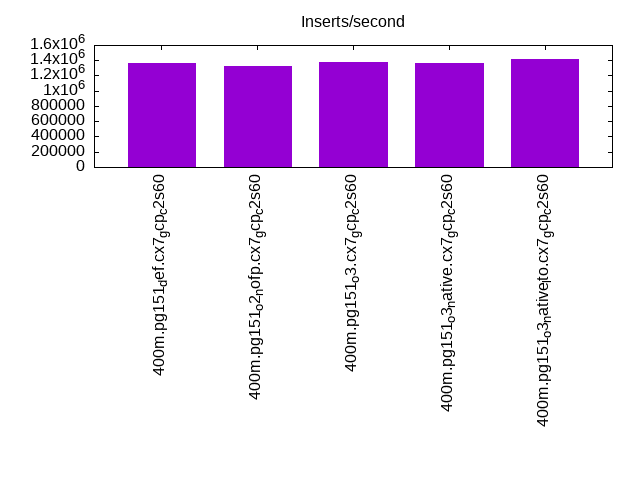
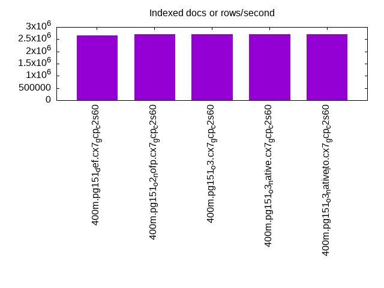
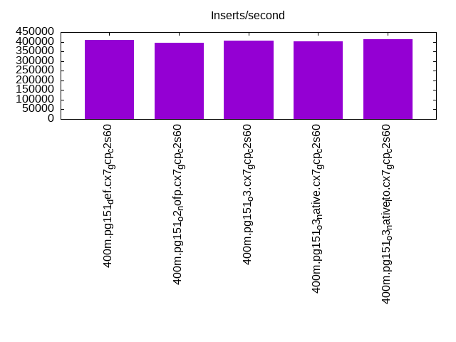
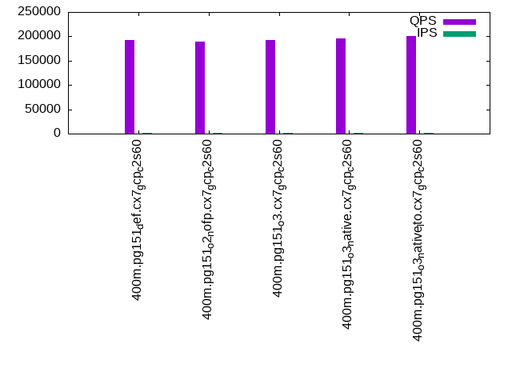
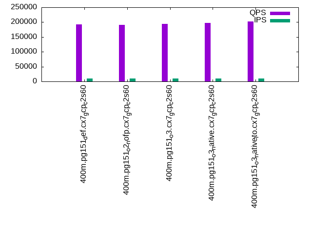
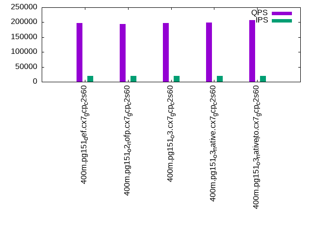

This is a report for the insert benchmark with 400M docs and 20 client(s). It is generated by scripts (bash, awk, sed) and Tufte might not be impressed. An overview of the insert benchmark is here and a short update is here. Below, by DBMS, I mean DBMS+version.config. An example is my8020.c10b40 where my means MySQL, 8020 is version 8.0.20 and c10b40 is the name for the configuration file.
The test server is a c2-standard-60 from GCP with 30 cores, hyperthreading disabled, 240G RAM and 3T from XFS and SW RAID 0 striped over 8 local NVMe drives. The benchmark was run with 20 clients and there were 1 or 2 connections per client (1 for queries, 1 for inserts). The benchmark loads 400M rows without secondary indexes, creates secondary indexes, loads another 400M rows then does 3 read+write tests for one hour each that do queries as fast as possible with 100, 500 and then 1000 writes/second/client concurrent with the queries. Each read-write test runs for 1800 seconds. The test was configured to use a table per client. The database is cached by the storage engine and the only IO is for writes. Clients and the DBMS share one server. The per-database configs are in the per-database subdirectories here.
The tested DBMS are:
The numbers are inserts/s for l.i0 and l.i1, indexed docs (or rows) /s for l.x and queries/s for q*.2. The values are the average rate over the entire test for inserts (IPS) and queries (QPS). The range of values for IPS and QPS is split into 3 parts: bottom 25%, middle 50%, top 25%. Values in the bottom 25% have a red background, values in the top 25% have a green background and values in the middle have no color. A gray background is used for values that can be ignored because the DBMS did not sustain the target insert rate. Red backgrounds are not used when the minimum value is within 80% of the max value.
| dbms | l.i0 | l.x | l.i1 | q100.1 | q500.1 | q1000.1 |
|---|---|---|---|---|---|---|
| 400m.pg151_def.cx7_gcp_c2s60 | 1365188 | 2667333 | 408163 | 192214 | 193237 | 197311 |
| 400m.pg151_o2_nofp.cx7_gcp_c2s60 | 1328904 | 2703378 | 394867 | 189800 | 190710 | 193978 |
| 400m.pg151_o3.cx7_gcp_c2s60 | 1379310 | 2703378 | 407332 | 192429 | 194243 | 197286 |
| 400m.pg151_o3_native.cx7_gcp_c2s60 | 1369863 | 2703378 | 401606 | 195377 | 196851 | 199574 |
| 400m.pg151_o3_native_lto.cx7_gcp_c2s60 | 1413428 | 2703378 | 411523 | 200643 | 202892 | 206586 |
This lists the average rate of inserts/s for the tests that do inserts concurrent with queries. For such tests the query rate is listed in the table above. The read+write tests are setup so that the insert rate should match the target rate every second. Cells that are not at least 95% of the target have a red background to indicate a failure to satisfy the target.
| dbms | q100.1 | q500.1 | q1000.1 |
|---|---|---|---|
| pg151_def.cx7_gcp_c2s60 | 1976 | 9885 | 19769 |
| pg151_o2_nofp.cx7_gcp_c2s60 | 1976 | 9885 | 19769 |
| pg151_o3.cx7_gcp_c2s60 | 1976 | 9885 | 19769 |
| pg151_o3_native.cx7_gcp_c2s60 | 1977 | 9885 | 19769 |
| pg151_o3_native_lto.cx7_gcp_c2s60 | 1976 | 9885 | 19769 |
| target | 2000 | 10000 | 20000 |
l.i0: load without secondary indexes. Graphs for performance per 1-second interval are here.
Average throughput:
Insert response time histogram: each cell has the percentage of responses that take <= the time in the header and max is the max response time in seconds. For the max column values in the top 25% of the range have a red background and in the bottom 25% of the range have a green background. The red background is not used when the min value is within 80% of the max value.
| dbms | 256us | 1ms | 4ms | 16ms | 64ms | 256ms | 1s | 4s | 16s | gt | max |
|---|---|---|---|---|---|---|---|---|---|---|---|
| pg151_def.cx7_gcp_c2s60 | 59.579 | 39.479 | 0.895 | 0.013 | 0.019 | 0.014 | 0.001 | 1.092 | |||
| pg151_o2_nofp.cx7_gcp_c2s60 | 56.851 | 42.188 | 0.913 | 0.011 | 0.021 | 0.016 | 0.660 | ||||
| pg151_o3.cx7_gcp_c2s60 | 60.023 | 39.065 | 0.869 | 0.011 | 0.018 | 0.013 | 0.001 | 1.039 | |||
| pg151_o3_native.cx7_gcp_c2s60 | 57.873 | 41.252 | 0.824 | 0.018 | 0.020 | 0.014 | 0.718 | ||||
| pg151_o3_native_lto.cx7_gcp_c2s60 | 59.717 | 39.458 | 0.775 | 0.014 | 0.023 | 0.014 | 0.637 |
Performance metrics for the DBMS listed above. Some are normalized by throughput, others are not. Legend for results is here.
ips qps rps rmbps wps wmbps rpq rkbpq wpi wkbpi csps cpups cspq cpupq dbgb1 dbgb2 rss maxop p50 p99 tag 1365188 0 0 0.0 1839.9 456.9 0.000 0.000 0.001 0.343 228873 60.3 0.168 13 38.3 103.4 0.0 1.092 78114 9489 400m.pg151_def.cx7_gcp_c2s60 1328904 0 0 0.0 1820.8 447.7 0.000 0.000 0.001 0.345 238238 59.8 0.179 13 38.3 104.3 NA 0.660 75718 14784 400m.pg151_o2_nofp.cx7_gcp_c2s60 1379310 0 0 0.0 1841.7 457.3 0.000 0.000 0.001 0.339 224469 59.6 0.163 13 38.3 103.4 0.0 1.039 78414 8091 400m.pg151_o3.cx7_gcp_c2s60 1369863 0 0 0.0 1847.5 454.4 0.000 0.000 0.001 0.340 245687 59.8 0.179 13 38.3 103.4 0.0 0.718 77113 15474 400m.pg151_o3_native.cx7_gcp_c2s60 1413428 0 0 0.0 1897.1 467.4 0.000 0.000 0.001 0.339 243763 59.8 0.172 13 38.3 103.4 0.0 0.637 80746 12685 400m.pg151_o3_native_lto.cx7_gcp_c2s60
l.x: create secondary indexes.
Average throughput:
Performance metrics for the DBMS listed above. Some are normalized by throughput, others are not. Legend for results is here.
ips qps rps rmbps wps wmbps rpq rkbpq wpi wkbpi csps cpups cspq cpupq dbgb1 dbgb2 rss maxop p50 p99 tag 2667333 0 9080 104.4 3236.6 822.8 0.003 0.040 0.001 0.316 105738 26.1 0.040 3 73.5 172.0 0.0 0.609 NA NA 400m.pg151_def.cx7_gcp_c2s60 2703378 0 8618 102.9 3278.0 820.8 0.003 0.039 0.001 0.311 106859 26.7 0.040 3 73.5 173.1 0.0 0.184 NA NA 400m.pg151_o2_nofp.cx7_gcp_c2s60 2703378 0 11424 109.1 3278.1 828.7 0.004 0.041 0.001 0.314 106898 26.6 0.040 3 73.5 171.7 0.0 0.830 NA NA 400m.pg151_o3.cx7_gcp_c2s60 2703378 0 12535 111.4 3296.1 837.2 0.005 0.042 0.001 0.317 108990 26.2 0.040 3 73.5 172.6 0.0 0.068 NA NA 400m.pg151_o3_native.cx7_gcp_c2s60 2703378 0 6568 99.7 3275.0 828.7 0.002 0.038 0.001 0.314 109170 26.1 0.040 3 73.5 171.7 0.0 0.103 NA NA 400m.pg151_o3_native_lto.cx7_gcp_c2s60
l.i1: continue load after secondary indexes created. Graphs for performance per 1-second interval are here.
Average throughput:
Insert response time histogram: each cell has the percentage of responses that take <= the time in the header and max is the max response time in seconds. For the max column values in the top 25% of the range have a red background and in the bottom 25% of the range have a green background. The red background is not used when the min value is within 80% of the max value.
| dbms | 256us | 1ms | 4ms | 16ms | 64ms | 256ms | 1s | 4s | 16s | gt | max |
|---|---|---|---|---|---|---|---|---|---|---|---|
| pg151_def.cx7_gcp_c2s60 | nonzero | 96.041 | 2.581 | 1.337 | 0.027 | 0.013 | nonzero | 1.295 | |||
| pg151_o2_nofp.cx7_gcp_c2s60 | 95.754 | 2.862 | 1.343 | 0.028 | 0.013 | 0.883 | |||||
| pg151_o3.cx7_gcp_c2s60 | nonzero | 95.841 | 2.756 | 1.363 | 0.025 | 0.014 | nonzero | 1.259 | |||
| pg151_o3_native.cx7_gcp_c2s60 | 0.002 | 95.850 | 2.755 | 1.351 | 0.027 | 0.014 | nonzero | 1.278 | |||
| pg151_o3_native_lto.cx7_gcp_c2s60 | 0.003 | 95.882 | 2.722 | 1.350 | 0.028 | 0.014 | 0.802 |
Performance metrics for the DBMS listed above. Some are normalized by throughput, others are not. Legend for results is here.
ips qps rps rmbps wps wmbps rpq rkbpq wpi wkbpi csps cpups cspq cpupq dbgb1 dbgb2 rss maxop p50 p99 tag 408163 0 4889 45.0 3362.7 523.8 0.012 0.113 0.008 1.314 286609 52.1 0.702 38 163.3 355.7 0.0 1.295 25865 1898 400m.pg151_def.cx7_gcp_c2s60 394867 0 5184 40.7 3565.7 517.2 0.013 0.106 0.009 1.341 300194 52.4 0.760 40 163.3 353.5 NA 0.883 24973 1699 400m.pg151_o2_nofp.cx7_gcp_c2s60 407332 0 5317 41.4 3330.6 530.7 0.013 0.104 0.008 1.334 290830 51.9 0.714 38 163.3 358.3 NA 1.259 25922 1848 400m.pg151_o3.cx7_gcp_c2s60 401606 0 5256 41.5 3438.7 520.8 0.013 0.106 0.009 1.328 319646 51.7 0.796 39 163.3 354.2 NA 1.278 25672 1798 400m.pg151_o3_native.cx7_gcp_c2s60 411523 0 5480 42.4 3249.1 533.4 0.013 0.106 0.008 1.327 301967 51.2 0.734 37 163.3 357.5 NA 0.802 26022 1748 400m.pg151_o3_native_lto.cx7_gcp_c2s60
q100.1: range queries with 100 insert/s per client. Graphs for performance per 1-second interval are here.
Average throughput:
Query response time histogram: each cell has the percentage of responses that take <= the time in the header and max is the max response time in seconds. For max values in the top 25% of the range have a red background and in the bottom 25% of the range have a green background. The red background is not used when the min value is within 80% of the max value.
| dbms | 256us | 1ms | 4ms | 16ms | 64ms | 256ms | 1s | 4s | 16s | gt | max |
|---|---|---|---|---|---|---|---|---|---|---|---|
| pg151_def.cx7_gcp_c2s60 | 99.972 | 0.020 | 0.006 | 0.001 | nonzero | 0.024 | |||||
| pg151_o2_nofp.cx7_gcp_c2s60 | 99.970 | 0.022 | 0.006 | 0.001 | nonzero | 0.027 | |||||
| pg151_o3.cx7_gcp_c2s60 | 99.971 | 0.021 | 0.006 | 0.001 | nonzero | 0.029 | |||||
| pg151_o3_native.cx7_gcp_c2s60 | 99.973 | 0.020 | 0.006 | 0.001 | nonzero | nonzero | 0.149 | ||||
| pg151_o3_native_lto.cx7_gcp_c2s60 | 99.976 | 0.016 | 0.006 | 0.001 | nonzero | 0.026 |
Insert response time histogram: each cell has the percentage of responses that take <= the time in the header and max is the max response time in seconds. For max values in the top 25% of the range have a red background and in the bottom 25% of the range have a green background. The red background is not used when the min value is within 80% of the max value.
| dbms | 256us | 1ms | 4ms | 16ms | 64ms | 256ms | 1s | 4s | 16s | gt | max |
|---|---|---|---|---|---|---|---|---|---|---|---|
| pg151_def.cx7_gcp_c2s60 | 95.669 | 3.557 | 0.757 | 0.017 | 0.113 | ||||||
| pg151_o2_nofp.cx7_gcp_c2s60 | 88.374 | 9.618 | 2.006 | 0.003 | 0.067 | ||||||
| pg151_o3.cx7_gcp_c2s60 | 95.960 | 3.549 | 0.489 | 0.003 | 0.080 | ||||||
| pg151_o3_native.cx7_gcp_c2s60 | 94.717 | 4.271 | 0.989 | 0.024 | 0.194 | ||||||
| pg151_o3_native_lto.cx7_gcp_c2s60 | 94.090 | 4.844 | 1.065 | 0.049 |
Performance metrics for the DBMS listed above. Some are normalized by throughput, others are not. Legend for results is here.
ips qps rps rmbps wps wmbps rpq rkbpq wpi wkbpi csps cpups cspq cpupq dbgb1 dbgb2 rss maxop p50 p99 tag 1976 192214 0 0.0 3590.8 83.3 0.000 0.000 1.817 43.178 684782 63.0 3.563 98 163.9 323.6 0.0 0.024 9669 9318 400m.pg151_def.cx7_gcp_c2s60 1976 189800 0 0.0 3464.2 86.7 0.000 0.000 1.753 44.949 677196 62.8 3.568 99 163.9 311.6 0.0 0.027 9477 9094 400m.pg151_o2_nofp.cx7_gcp_c2s60 1976 192429 0 0.0 3564.3 85.5 0.000 0.000 1.804 44.291 686637 62.9 3.568 98 163.9 326.6 0.0 0.029 9637 9270 400m.pg151_o3.cx7_gcp_c2s60 1977 195377 0 0.0 3528.4 86.2 0.000 0.000 1.785 44.665 695098 62.9 3.558 97 163.9 312.1 0.0 0.149 9765 9434 400m.pg151_o3_native.cx7_gcp_c2s60 1976 200643 0 0.0 3578.3 85.3 0.000 0.000 1.811 44.205 714355 62.8 3.560 94 163.9 326.0 0.0 0.026 9973 9605 400m.pg151_o3_native_lto.cx7_gcp_c2s60
q500.1: range queries with 500 insert/s per client. Graphs for performance per 1-second interval are here.
Average throughput:
Query response time histogram: each cell has the percentage of responses that take <= the time in the header and max is the max response time in seconds. For max values in the top 25% of the range have a red background and in the bottom 25% of the range have a green background. The red background is not used when the min value is within 80% of the max value.
| dbms | 256us | 1ms | 4ms | 16ms | 64ms | 256ms | 1s | 4s | 16s | gt | max |
|---|---|---|---|---|---|---|---|---|---|---|---|
| pg151_def.cx7_gcp_c2s60 | 99.909 | 0.058 | 0.029 | 0.004 | nonzero | 0.048 | |||||
| pg151_o2_nofp.cx7_gcp_c2s60 | 99.905 | 0.061 | 0.029 | 0.004 | nonzero | nonzero | 0.066 | ||||
| pg151_o3.cx7_gcp_c2s60 | 99.909 | 0.058 | 0.029 | 0.004 | nonzero | 0.051 | |||||
| pg151_o3_native.cx7_gcp_c2s60 | 99.912 | 0.056 | 0.028 | 0.004 | nonzero | 0.041 | |||||
| pg151_o3_native_lto.cx7_gcp_c2s60 | 99.917 | 0.052 | 0.028 | 0.004 | nonzero | 0.056 |
Insert response time histogram: each cell has the percentage of responses that take <= the time in the header and max is the max response time in seconds. For max values in the top 25% of the range have a red background and in the bottom 25% of the range have a green background. The red background is not used when the min value is within 80% of the max value.
| dbms | 256us | 1ms | 4ms | 16ms | 64ms | 256ms | 1s | 4s | 16s | gt | max |
|---|---|---|---|---|---|---|---|---|---|---|---|
| pg151_def.cx7_gcp_c2s60 | 45.225 | 24.976 | 28.588 | 1.211 | 0.167 | ||||||
| pg151_o2_nofp.cx7_gcp_c2s60 | 44.958 | 25.335 | 28.495 | 1.205 | 0.007 | 0.434 | |||||
| pg151_o3.cx7_gcp_c2s60 | 45.263 | 24.724 | 28.799 | 1.214 | 0.216 | ||||||
| pg151_o3_native.cx7_gcp_c2s60 | 45.568 | 24.803 | 28.420 | 1.209 | 0.177 | ||||||
| pg151_o3_native_lto.cx7_gcp_c2s60 | 45.407 | 24.647 | 28.690 | 1.255 | 0.002 | 0.357 |
Performance metrics for the DBMS listed above. Some are normalized by throughput, others are not. Legend for results is here.
ips qps rps rmbps wps wmbps rpq rkbpq wpi wkbpi csps cpups cspq cpupq dbgb1 dbgb2 rss maxop p50 p99 tag 9885 193237 0 0.0 6214.9 193.6 0.000 0.000 0.629 20.053 675752 63.8 3.497 99 167.5 270.1 0.0 0.048 9669 9158 400m.pg151_def.cx7_gcp_c2s60 9885 190710 0 0.0 6216.2 195.0 0.000 0.000 0.629 20.199 668274 64.1 3.504 101 167.5 269.4 0.0 0.066 9494 8998 400m.pg151_o2_nofp.cx7_gcp_c2s60 9885 194243 0 0.0 6230.7 194.4 0.000 0.000 0.630 20.144 680653 63.7 3.504 98 167.4 271.2 0.0 0.051 9670 9206 400m.pg151_o3.cx7_gcp_c2s60 9885 196851 0 0.0 6138.2 193.0 0.000 0.000 0.621 19.997 689130 63.6 3.501 97 167.5 270.2 0.0 0.041 9733 9254 400m.pg151_o3_native.cx7_gcp_c2s60 9885 202892 0 0.0 6350.4 195.9 0.000 0.000 0.642 20.294 708623 63.8 3.493 94 167.4 272.3 0.0 0.056 10069 9530 400m.pg151_o3_native_lto.cx7_gcp_c2s60
q1000.1: range queries with 1000 insert/s per client. Graphs for performance per 1-second interval are here.
Average throughput:
Query response time histogram: each cell has the percentage of responses that take <= the time in the header and max is the max response time in seconds. For max values in the top 25% of the range have a red background and in the bottom 25% of the range have a green background. The red background is not used when the min value is within 80% of the max value.
| dbms | 256us | 1ms | 4ms | 16ms | 64ms | 256ms | 1s | 4s | 16s | gt | max |
|---|---|---|---|---|---|---|---|---|---|---|---|
| pg151_def.cx7_gcp_c2s60 | 99.853 | 0.097 | 0.042 | 0.008 | nonzero | nonzero | 0.097 | ||||
| pg151_o2_nofp.cx7_gcp_c2s60 | 99.844 | 0.105 | 0.043 | 0.008 | 0.001 | nonzero | 0.157 | ||||
| pg151_o3.cx7_gcp_c2s60 | 99.850 | 0.100 | 0.042 | 0.008 | 0.001 | nonzero | 0.115 | ||||
| pg151_o3_native.cx7_gcp_c2s60 | 99.851 | 0.099 | 0.042 | 0.008 | nonzero | nonzero | 0.151 | ||||
| pg151_o3_native_lto.cx7_gcp_c2s60 | 99.863 | 0.089 | 0.041 | 0.007 | nonzero | 0.060 |
Insert response time histogram: each cell has the percentage of responses that take <= the time in the header and max is the max response time in seconds. For max values in the top 25% of the range have a red background and in the bottom 25% of the range have a green background. The red background is not used when the min value is within 80% of the max value.
| dbms | 256us | 1ms | 4ms | 16ms | 64ms | 256ms | 1s | 4s | 16s | gt | max |
|---|---|---|---|---|---|---|---|---|---|---|---|
| pg151_def.cx7_gcp_c2s60 | 58.479 | 21.546 | 19.083 | 0.893 | 0.232 | ||||||
| pg151_o2_nofp.cx7_gcp_c2s60 | 57.181 | 22.479 | 19.405 | 0.936 | 0.239 | ||||||
| pg151_o3.cx7_gcp_c2s60 | 58.508 | 21.679 | 18.910 | 0.902 | 0.227 | ||||||
| pg151_o3_native.cx7_gcp_c2s60 | 57.656 | 21.983 | 19.383 | 0.978 | 0.242 | ||||||
| pg151_o3_native_lto.cx7_gcp_c2s60 | 59.319 | 21.184 | 18.631 | 0.866 | 0.209 |
Performance metrics for the DBMS listed above. Some are normalized by throughput, others are not. Legend for results is here.
ips qps rps rmbps wps wmbps rpq rkbpq wpi wkbpi csps cpups cspq cpupq dbgb1 dbgb2 rss maxop p50 p99 tag 19769 197311 0 0.0 6355.0 268.4 0.000 0.000 0.321 13.905 669559 65.2 3.393 99 179.6 279.3 0.0 0.097 9813 8886 400m.pg151_def.cx7_gcp_c2s60 19769 193978 0 0.0 6337.5 273.0 0.000 0.000 0.321 14.140 659211 65.3 3.398 101 179.6 278.6 0.0 0.157 9781 8870 400m.pg151_o2_nofp.cx7_gcp_c2s60 19769 197286 0 0.0 6345.5 268.7 0.000 0.000 0.321 13.916 670882 65.2 3.401 99 179.6 280.0 0.0 0.115 9813 8806 400m.pg151_o3.cx7_gcp_c2s60 19769 199574 0 0.0 6343.1 271.7 0.000 0.000 0.321 14.072 679278 65.0 3.404 98 179.6 279.4 0.0 0.151 9967 8982 400m.pg151_o3_native.cx7_gcp_c2s60 19769 206586 0 0.0 6302.9 266.1 0.000 0.000 0.319 13.783 701415 64.9 3.395 94 179.6 280.7 0.0 0.060 10293 9382 400m.pg151_o3_native_lto.cx7_gcp_c2s60
l.i0: load without secondary indexes
Performance metrics for all DBMS, not just the ones listed above. Some are normalized by throughput, others are not. Legend for results is here.
ips qps rps rmbps wps wmbps rpq rkbpq wpi wkbpi csps cpups cspq cpupq dbgb1 dbgb2 rss maxop p50 p99 tag 1365188 0 0 0.0 1839.9 456.9 0.000 0.000 0.001 0.343 228873 60.3 0.168 13 38.3 103.4 0.0 1.092 78114 9489 400m.pg151_def.cx7_gcp_c2s60 1328904 0 0 0.0 1820.8 447.7 0.000 0.000 0.001 0.345 238238 59.8 0.179 13 38.3 104.3 NA 0.660 75718 14784 400m.pg151_o2_nofp.cx7_gcp_c2s60 1379310 0 0 0.0 1841.7 457.3 0.000 0.000 0.001 0.339 224469 59.6 0.163 13 38.3 103.4 0.0 1.039 78414 8091 400m.pg151_o3.cx7_gcp_c2s60 1369863 0 0 0.0 1847.5 454.4 0.000 0.000 0.001 0.340 245687 59.8 0.179 13 38.3 103.4 0.0 0.718 77113 15474 400m.pg151_o3_native.cx7_gcp_c2s60 1413428 0 0 0.0 1897.1 467.4 0.000 0.000 0.001 0.339 243763 59.8 0.172 13 38.3 103.4 0.0 0.637 80746 12685 400m.pg151_o3_native_lto.cx7_gcp_c2s60
l.x: create secondary indexes
Performance metrics for all DBMS, not just the ones listed above. Some are normalized by throughput, others are not. Legend for results is here.
ips qps rps rmbps wps wmbps rpq rkbpq wpi wkbpi csps cpups cspq cpupq dbgb1 dbgb2 rss maxop p50 p99 tag 2667333 0 9080 104.4 3236.6 822.8 0.003 0.040 0.001 0.316 105738 26.1 0.040 3 73.5 172.0 0.0 0.609 NA NA 400m.pg151_def.cx7_gcp_c2s60 2703378 0 8618 102.9 3278.0 820.8 0.003 0.039 0.001 0.311 106859 26.7 0.040 3 73.5 173.1 0.0 0.184 NA NA 400m.pg151_o2_nofp.cx7_gcp_c2s60 2703378 0 11424 109.1 3278.1 828.7 0.004 0.041 0.001 0.314 106898 26.6 0.040 3 73.5 171.7 0.0 0.830 NA NA 400m.pg151_o3.cx7_gcp_c2s60 2703378 0 12535 111.4 3296.1 837.2 0.005 0.042 0.001 0.317 108990 26.2 0.040 3 73.5 172.6 0.0 0.068 NA NA 400m.pg151_o3_native.cx7_gcp_c2s60 2703378 0 6568 99.7 3275.0 828.7 0.002 0.038 0.001 0.314 109170 26.1 0.040 3 73.5 171.7 0.0 0.103 NA NA 400m.pg151_o3_native_lto.cx7_gcp_c2s60
l.i1: continue load after secondary indexes created
Performance metrics for all DBMS, not just the ones listed above. Some are normalized by throughput, others are not. Legend for results is here.
ips qps rps rmbps wps wmbps rpq rkbpq wpi wkbpi csps cpups cspq cpupq dbgb1 dbgb2 rss maxop p50 p99 tag 408163 0 4889 45.0 3362.7 523.8 0.012 0.113 0.008 1.314 286609 52.1 0.702 38 163.3 355.7 0.0 1.295 25865 1898 400m.pg151_def.cx7_gcp_c2s60 394867 0 5184 40.7 3565.7 517.2 0.013 0.106 0.009 1.341 300194 52.4 0.760 40 163.3 353.5 NA 0.883 24973 1699 400m.pg151_o2_nofp.cx7_gcp_c2s60 407332 0 5317 41.4 3330.6 530.7 0.013 0.104 0.008 1.334 290830 51.9 0.714 38 163.3 358.3 NA 1.259 25922 1848 400m.pg151_o3.cx7_gcp_c2s60 401606 0 5256 41.5 3438.7 520.8 0.013 0.106 0.009 1.328 319646 51.7 0.796 39 163.3 354.2 NA 1.278 25672 1798 400m.pg151_o3_native.cx7_gcp_c2s60 411523 0 5480 42.4 3249.1 533.4 0.013 0.106 0.008 1.327 301967 51.2 0.734 37 163.3 357.5 NA 0.802 26022 1748 400m.pg151_o3_native_lto.cx7_gcp_c2s60
q100.1: range queries with 100 insert/s per client
Performance metrics for all DBMS, not just the ones listed above. Some are normalized by throughput, others are not. Legend for results is here.
ips qps rps rmbps wps wmbps rpq rkbpq wpi wkbpi csps cpups cspq cpupq dbgb1 dbgb2 rss maxop p50 p99 tag 1976 192214 0 0.0 3590.8 83.3 0.000 0.000 1.817 43.178 684782 63.0 3.563 98 163.9 323.6 0.0 0.024 9669 9318 400m.pg151_def.cx7_gcp_c2s60 1976 189800 0 0.0 3464.2 86.7 0.000 0.000 1.753 44.949 677196 62.8 3.568 99 163.9 311.6 0.0 0.027 9477 9094 400m.pg151_o2_nofp.cx7_gcp_c2s60 1976 192429 0 0.0 3564.3 85.5 0.000 0.000 1.804 44.291 686637 62.9 3.568 98 163.9 326.6 0.0 0.029 9637 9270 400m.pg151_o3.cx7_gcp_c2s60 1977 195377 0 0.0 3528.4 86.2 0.000 0.000 1.785 44.665 695098 62.9 3.558 97 163.9 312.1 0.0 0.149 9765 9434 400m.pg151_o3_native.cx7_gcp_c2s60 1976 200643 0 0.0 3578.3 85.3 0.000 0.000 1.811 44.205 714355 62.8 3.560 94 163.9 326.0 0.0 0.026 9973 9605 400m.pg151_o3_native_lto.cx7_gcp_c2s60
q500.1: range queries with 500 insert/s per client
Performance metrics for all DBMS, not just the ones listed above. Some are normalized by throughput, others are not. Legend for results is here.
ips qps rps rmbps wps wmbps rpq rkbpq wpi wkbpi csps cpups cspq cpupq dbgb1 dbgb2 rss maxop p50 p99 tag 9885 193237 0 0.0 6214.9 193.6 0.000 0.000 0.629 20.053 675752 63.8 3.497 99 167.5 270.1 0.0 0.048 9669 9158 400m.pg151_def.cx7_gcp_c2s60 9885 190710 0 0.0 6216.2 195.0 0.000 0.000 0.629 20.199 668274 64.1 3.504 101 167.5 269.4 0.0 0.066 9494 8998 400m.pg151_o2_nofp.cx7_gcp_c2s60 9885 194243 0 0.0 6230.7 194.4 0.000 0.000 0.630 20.144 680653 63.7 3.504 98 167.4 271.2 0.0 0.051 9670 9206 400m.pg151_o3.cx7_gcp_c2s60 9885 196851 0 0.0 6138.2 193.0 0.000 0.000 0.621 19.997 689130 63.6 3.501 97 167.5 270.2 0.0 0.041 9733 9254 400m.pg151_o3_native.cx7_gcp_c2s60 9885 202892 0 0.0 6350.4 195.9 0.000 0.000 0.642 20.294 708623 63.8 3.493 94 167.4 272.3 0.0 0.056 10069 9530 400m.pg151_o3_native_lto.cx7_gcp_c2s60
q1000.1: range queries with 1000 insert/s per client
Performance metrics for all DBMS, not just the ones listed above. Some are normalized by throughput, others are not. Legend for results is here.
ips qps rps rmbps wps wmbps rpq rkbpq wpi wkbpi csps cpups cspq cpupq dbgb1 dbgb2 rss maxop p50 p99 tag 19769 197311 0 0.0 6355.0 268.4 0.000 0.000 0.321 13.905 669559 65.2 3.393 99 179.6 279.3 0.0 0.097 9813 8886 400m.pg151_def.cx7_gcp_c2s60 19769 193978 0 0.0 6337.5 273.0 0.000 0.000 0.321 14.140 659211 65.3 3.398 101 179.6 278.6 0.0 0.157 9781 8870 400m.pg151_o2_nofp.cx7_gcp_c2s60 19769 197286 0 0.0 6345.5 268.7 0.000 0.000 0.321 13.916 670882 65.2 3.401 99 179.6 280.0 0.0 0.115 9813 8806 400m.pg151_o3.cx7_gcp_c2s60 19769 199574 0 0.0 6343.1 271.7 0.000 0.000 0.321 14.072 679278 65.0 3.404 98 179.6 279.4 0.0 0.151 9967 8982 400m.pg151_o3_native.cx7_gcp_c2s60 19769 206586 0 0.0 6302.9 266.1 0.000 0.000 0.319 13.783 701415 64.9 3.395 94 179.6 280.7 0.0 0.060 10293 9382 400m.pg151_o3_native_lto.cx7_gcp_c2s60
Insert response time histogram
256us 1ms 4ms 16ms 64ms 256ms 1s 4s 16s gt max tag 0.000 59.579 39.479 0.895 0.013 0.019 0.014 0.001 0.000 0.000 1.092 pg151_def.cx7_gcp_c2s60 0.000 56.851 42.188 0.913 0.011 0.021 0.016 0.000 0.000 0.000 0.660 pg151_o2_nofp.cx7_gcp_c2s60 0.000 60.023 39.065 0.869 0.011 0.018 0.013 0.001 0.000 0.000 1.039 pg151_o3.cx7_gcp_c2s60 0.000 57.873 41.252 0.824 0.018 0.020 0.014 0.000 0.000 0.000 0.718 pg151_o3_native.cx7_gcp_c2s60 0.000 59.717 39.458 0.775 0.014 0.023 0.014 0.000 0.000 0.000 0.637 pg151_o3_native_lto.cx7_gcp_c2s60
TODO - determine whether there is data for create index response time
Insert response time histogram
256us 1ms 4ms 16ms 64ms 256ms 1s 4s 16s gt max tag 0.000 nonzero 96.041 2.581 1.337 0.027 0.013 nonzero 0.000 0.000 1.295 pg151_def.cx7_gcp_c2s60 0.000 0.000 95.754 2.862 1.343 0.028 0.013 0.000 0.000 0.000 0.883 pg151_o2_nofp.cx7_gcp_c2s60 0.000 nonzero 95.841 2.756 1.363 0.025 0.014 nonzero 0.000 0.000 1.259 pg151_o3.cx7_gcp_c2s60 0.000 0.002 95.850 2.755 1.351 0.027 0.014 nonzero 0.000 0.000 1.278 pg151_o3_native.cx7_gcp_c2s60 0.000 0.003 95.882 2.722 1.350 0.028 0.014 0.000 0.000 0.000 0.802 pg151_o3_native_lto.cx7_gcp_c2s60
Query response time histogram
256us 1ms 4ms 16ms 64ms 256ms 1s 4s 16s gt max tag 99.972 0.020 0.006 0.001 nonzero 0.000 0.000 0.000 0.000 0.000 0.024 pg151_def.cx7_gcp_c2s60 99.970 0.022 0.006 0.001 nonzero 0.000 0.000 0.000 0.000 0.000 0.027 pg151_o2_nofp.cx7_gcp_c2s60 99.971 0.021 0.006 0.001 nonzero 0.000 0.000 0.000 0.000 0.000 0.029 pg151_o3.cx7_gcp_c2s60 99.973 0.020 0.006 0.001 nonzero nonzero 0.000 0.000 0.000 0.000 0.149 pg151_o3_native.cx7_gcp_c2s60 99.976 0.016 0.006 0.001 nonzero 0.000 0.000 0.000 0.000 0.000 0.026 pg151_o3_native_lto.cx7_gcp_c2s60
Insert response time histogram
256us 1ms 4ms 16ms 64ms 256ms 1s 4s 16s gt max tag 0.000 0.000 95.669 3.557 0.757 0.017 0.000 0.000 0.000 0.000 0.113 pg151_def.cx7_gcp_c2s60 0.000 0.000 88.374 9.618 2.006 0.003 0.000 0.000 0.000 0.000 0.067 pg151_o2_nofp.cx7_gcp_c2s60 0.000 0.000 95.960 3.549 0.489 0.003 0.000 0.000 0.000 0.000 0.080 pg151_o3.cx7_gcp_c2s60 0.000 0.000 94.717 4.271 0.989 0.024 0.000 0.000 0.000 0.000 0.194 pg151_o3_native.cx7_gcp_c2s60 0.000 0.000 94.090 4.844 1.065 0.000 0.000 0.000 0.000 0.000 0.049 pg151_o3_native_lto.cx7_gcp_c2s60
Query response time histogram
256us 1ms 4ms 16ms 64ms 256ms 1s 4s 16s gt max tag 99.909 0.058 0.029 0.004 nonzero 0.000 0.000 0.000 0.000 0.000 0.048 pg151_def.cx7_gcp_c2s60 99.905 0.061 0.029 0.004 nonzero nonzero 0.000 0.000 0.000 0.000 0.066 pg151_o2_nofp.cx7_gcp_c2s60 99.909 0.058 0.029 0.004 nonzero 0.000 0.000 0.000 0.000 0.000 0.051 pg151_o3.cx7_gcp_c2s60 99.912 0.056 0.028 0.004 nonzero 0.000 0.000 0.000 0.000 0.000 0.041 pg151_o3_native.cx7_gcp_c2s60 99.917 0.052 0.028 0.004 nonzero 0.000 0.000 0.000 0.000 0.000 0.056 pg151_o3_native_lto.cx7_gcp_c2s60
Insert response time histogram
256us 1ms 4ms 16ms 64ms 256ms 1s 4s 16s gt max tag 0.000 0.000 45.225 24.976 28.588 1.211 0.000 0.000 0.000 0.000 0.167 pg151_def.cx7_gcp_c2s60 0.000 0.000 44.958 25.335 28.495 1.205 0.007 0.000 0.000 0.000 0.434 pg151_o2_nofp.cx7_gcp_c2s60 0.000 0.000 45.263 24.724 28.799 1.214 0.000 0.000 0.000 0.000 0.216 pg151_o3.cx7_gcp_c2s60 0.000 0.000 45.568 24.803 28.420 1.209 0.000 0.000 0.000 0.000 0.177 pg151_o3_native.cx7_gcp_c2s60 0.000 0.000 45.407 24.647 28.690 1.255 0.002 0.000 0.000 0.000 0.357 pg151_o3_native_lto.cx7_gcp_c2s60
Query response time histogram
256us 1ms 4ms 16ms 64ms 256ms 1s 4s 16s gt max tag 99.853 0.097 0.042 0.008 nonzero nonzero 0.000 0.000 0.000 0.000 0.097 pg151_def.cx7_gcp_c2s60 99.844 0.105 0.043 0.008 0.001 nonzero 0.000 0.000 0.000 0.000 0.157 pg151_o2_nofp.cx7_gcp_c2s60 99.850 0.100 0.042 0.008 0.001 nonzero 0.000 0.000 0.000 0.000 0.115 pg151_o3.cx7_gcp_c2s60 99.851 0.099 0.042 0.008 nonzero nonzero 0.000 0.000 0.000 0.000 0.151 pg151_o3_native.cx7_gcp_c2s60 99.863 0.089 0.041 0.007 nonzero 0.000 0.000 0.000 0.000 0.000 0.060 pg151_o3_native_lto.cx7_gcp_c2s60
Insert response time histogram
256us 1ms 4ms 16ms 64ms 256ms 1s 4s 16s gt max tag 0.000 0.000 58.479 21.546 19.083 0.893 0.000 0.000 0.000 0.000 0.232 pg151_def.cx7_gcp_c2s60 0.000 0.000 57.181 22.479 19.405 0.936 0.000 0.000 0.000 0.000 0.239 pg151_o2_nofp.cx7_gcp_c2s60 0.000 0.000 58.508 21.679 18.910 0.902 0.000 0.000 0.000 0.000 0.227 pg151_o3.cx7_gcp_c2s60 0.000 0.000 57.656 21.983 19.383 0.978 0.000 0.000 0.000 0.000 0.242 pg151_o3_native.cx7_gcp_c2s60 0.000 0.000 59.319 21.184 18.631 0.866 0.000 0.000 0.000 0.000 0.209 pg151_o3_native_lto.cx7_gcp_c2s60